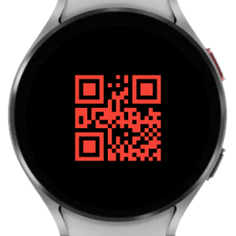
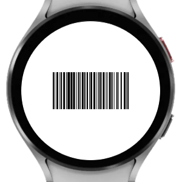
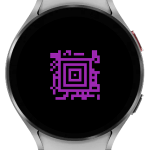

QRtz
"Quartz" or [kwɔːts]
for Wear OS
If a quick glance at your wrist to tell the time isn't your thing...
Product highlights

QR code
Watch face supports both 12- and 24-hour format, custom foreground & background colors and more...

Linear barcode
The barcode time changes every second when watch face is active. In ambient mode time automatically switches to only showing hours and minutes.

Aztec
Until you're fluent (?) in reading barcodes, you can always scan your watch with your phone to find out the time...